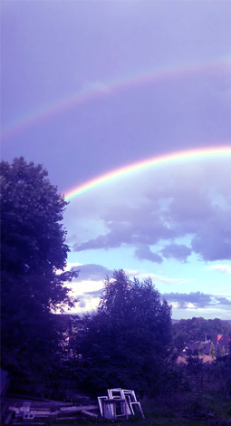
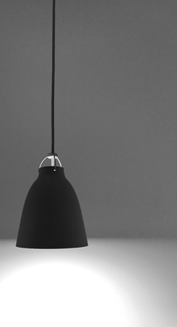

creativity and inspiration
Focus on your feelings, emotions.
‘Is expressing yourself through art easy?’ you probably keep thinking. Yes and no. Why? Because it is not that easy to convince yourself to free your thoughts, to start seeing world through artistic and a little bit ‘cheesy’ sunglasses. What I am trying to tell you is that you need to go out of your personal little ‘bubble’. What will happen next? The ART will happen. Your true creativity will explode as inactive volcanoes do, unexpectedly.
Maybe you shouldn’t run so fast.
Firstly, just search for art. Go to the art museum and try to see and feel something more. Maybe you shouldn’t run so fast through the whole exhibition like professional sprinters do on the Summer Olympic Games once every four years.
Stop in front of the piece of art that is presented. Look at it. Maybe close your eyes for a moment to think what it can mean…what it can possibly mean to YOU. Don’t assume that the most rightful explanation for the artwork is what the artist has been thinking during the process of creating it. Of course, it can be the most truthful for that artist but not always for you.
Secondly, be a little bit egoistic in the way that you look at your art and at the art in general. Focus on your feelings, emotions and the beauty. Nevertheless, don’t forget that the beauty, the art, everything creative is relative and subjective. Ten people can look at the same thing and 5 of them will be amazed by it, 2 will think that it is just ugly and 3 might be not affected by it at all.
Overall, as Chuck Close once said 'Inspiration is for amateurs. The rest of us just show up and get the work done. If you wait around for the clouds to part and a bolt of lightning to strike you in the brain, you're not going to make an awful lot of work'.
The ART will happen. Be prepared.